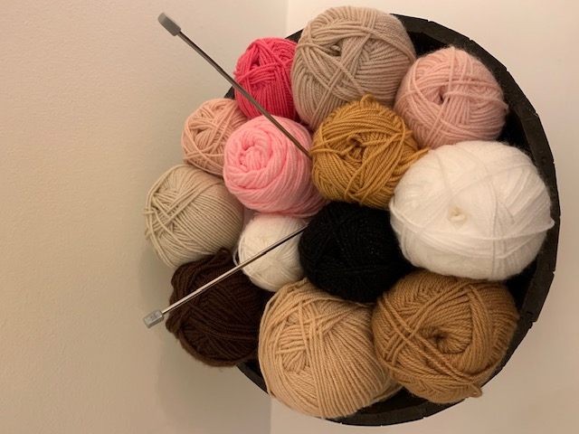

Moss Stitch
Bespoke hand knitted unique gifts and treasures
Made by London based mother and daughter team
All items are individually packaged in cellophane bags with a unique Moss Stitch gift tag and a handmade with love button.
All measurements are approximate as each item is hand crafted and slightly different.
All knitted items filled with high quality, machine washable filling, which conforms to European Toy Safety standards.
Hand delivery to ASL & St. John's Wood
Contact us for availibility: mossStitchLondon@gmail.com